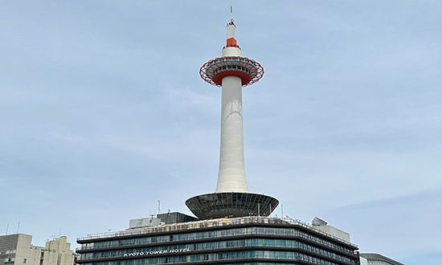
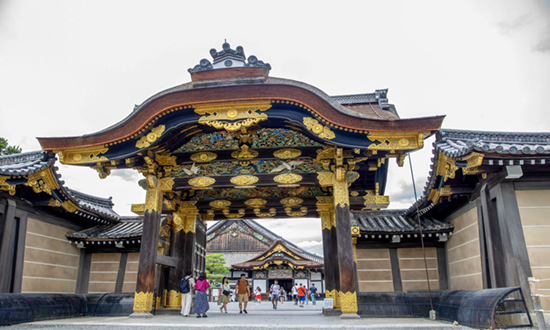
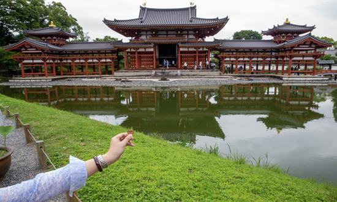
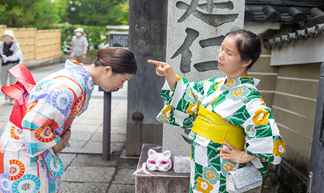
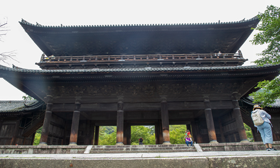

1 / 10
与关西机场的暮色同框
彷彿走进印象派的画作中
封存了浪漫的瞬间
2 / 10
泉佐野的清晨
阳光染红一片片云朵
一寸寸唤醒沉睡中的街道
3 / 10

千年京光耀 眺望古都美
风华绽放 绝景入眼
4 / 10

二条城走过400年风华
象徵德川幕府起落
时代淘尽风流人物
只有古城还屹立于此。
5 / 10

千年古刹平等院
10元硬币上一佛寺
凤凰堂内静静观想
屋嵴上的一对凤凰
也许早已抵达西方极乐世界
6 / 10
三室户寺庭园中
万颗紫阳花于仲夏中齐放
俨然日本的夏季风物诗
笔记：寺庙的紫阳花，
古时候用来宽慰梅雨季中感染病逝的亡魂。
7 / 10

花见小路一隅...
居酒屋妈妈桑：
叫你好好工作，竟敢偷跑出去玩
小员工：
すみません~~~
8 / 10
千年佛寺 舞台高悬
只可惜
清水不再安静流过
汹涌人潮熙熙攘攘
观音虽庄严 尘世却喧嚣
9 / 10

方丈庭园
碎石中涟漪圈圈
南禅寺清幽祥和
禅修冥想得清明
10 / 10
哲学之道漫步中
或许能与西田教授体悟相同
猫咪也在此开悟
惬意悠闲就是猫生之道
❮
❯